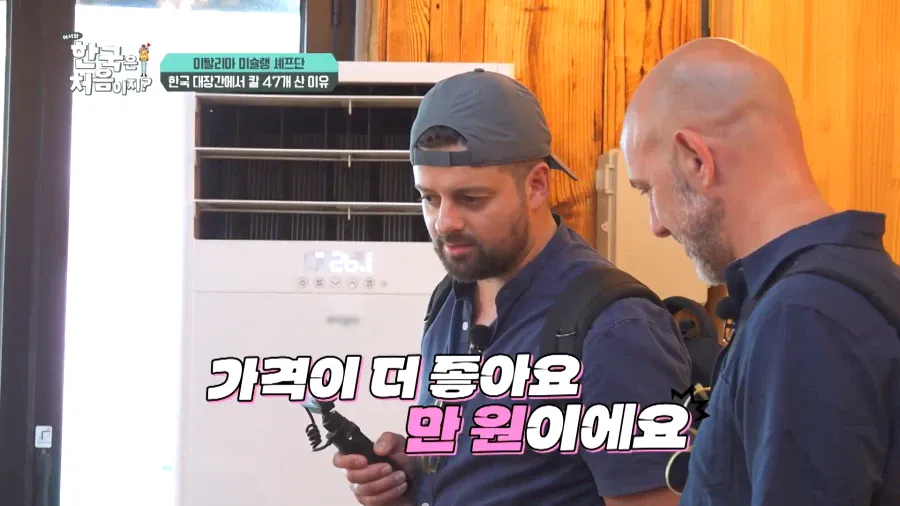
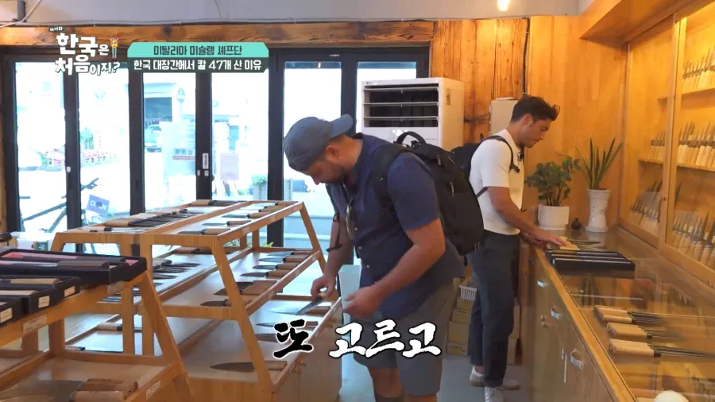
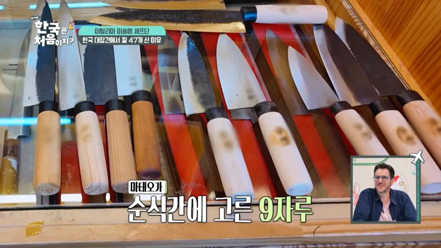
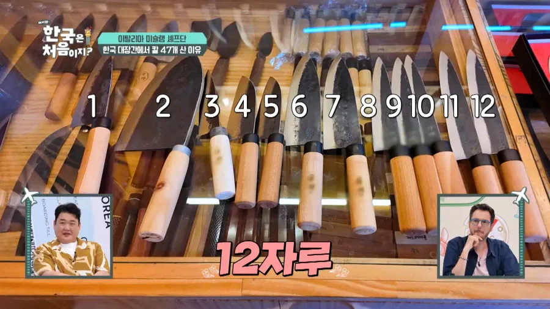

각각
9 자루
12 자루
26 자루 ㄷㄷㄷ




각각
9 자루
12 자루
26 자루 ㄷㄷㄷ
품질이 다를꺼 아녀 실망하면 어떡해
한국 전통대장간에서 만든 식칼 품질 좋음.
조리과 있을때 알아봤는데 의외로 품질 개좋은데 사람들이 몰라서 값을 못받는 느낌임
손잡이가 나무면 일반인들이 쓰기엔 좀
위생관리때문에?
솔직히 업장에서도 쓰면 안됨
우리집에도 한자루 있었는데 진짜 수십년 써도 요즘 식칼들이랑 비교가 안됨
생각보다 식칼이 그렇게 드라마틱한 차이가 나진않음
강제에 따라 천차만별에 뭐 백강 청강 어떻다 써는맛이 다르다 하는데
결국 절삭력은 칼날을 어떻게 갈았고 칼의 형상 무게밸런스 그립의 모양 사용자에 따라 다 다르게 느껴지기때문
수십수백만원짜리 고가 나이프보다 오래 써서 손에 익은 평범한 칼이 더 편하다는뜻
물론 강재에 따른 경도 차이로인해 절삭력이 오래 유지되는건 사실임 그래서 더 단단하고 비싼 칼을 쓰는거긴함
당연 짤에 없지만 방송에서는 칼질해보고 사는거임
지금 시대엔 강재가격이 엄청 싸져서 옛날처럼 탄소강,스테인레스가 존나 비싸니까 잡철,사철 이런걸로 만드는 시대가 아니니까
고강도 강재를 쓴 제품은 날이 더 오래가긴 하는데 그거는 직접 날을 세울 수 가 없음 돈내고 회사에 AS보내야 함 비용이 계속 붙음
가정집이면 1일 3끼 언저리겠지만 셰프는 수십인분 수백인분 하니까 날 세우는 주기도 그만큼 짧아지는거고
셰프 입장에선 적당히 자기가 직접 날 세우고 관리할 수 있고 적당히 손에 감기는 그런게 더 중요함
어차피 지금 시중에 풀리는 식칼 중엔 아무리 좆구린거라도 강재만 제대로 된 거 썼으면 저점이 이미 보장 된 거니까 싸면 쌀수록 개이득인거고
디자인이 근데 농기구 호미랑 별 다를게없네
전통 부엌칼
호미도 파는곳이라 호미도 사가더라
출국할 때 엑스레이 검색대 직원 움찔하겄네
위탁수하물로 보내니까 괜찮을듯 ㅇㅇ
해외나가서 선물용으로 의미도 잇고 싸고 좋지
일식도 아니고 양식 셰프가 손잡이 일체형을 안쓴다는건 병신짓이지 걍 국뽕주작
기념품 사는건데 뭘 ㅋㅋ
근데 그거랑 별개로 국내 대장장이들이 만드는 칼이나 농기구 퀄리티 개좋음
현직이야? ㅋㅋㅋㅋㅋㅋ
고든램지도 손잡이 따로 달린거 쓰던디?
ㄹㅇ 뭐 써본것도아니고 뭘알고 사재기를함
고수는 검의 목소리를 듣는 법
써 봄
써보고 사가는거임
그럼 인정이지
대장간칼은 관리하기 힘들어서 안사는거 아닌가. 나두 함 사볼려다가 내 생활습관대루면 금방 녹슬꺼같아서 안샀는데
그래서 저긴 탄소강하고 스텐 두개로 구분해서 팔음
검귀들이네 ㅋㅋ
이탈리안 사무로 ㄷㄷ
저거 철도 레일 녹여서 만든 강철로 만들자나
잘 몰라서 그러는데
다른 자재 녹여서 만든 칼은 비처녀칼 취급인거임?
말을 해도 꼭 ㅋㅋㅋㅋㅋㅋ
저걸로 이기어검술 할려고
저 세 명 다 자기 가게 있는 셰프들임. 마지막에 26자루 산 셰프는 자기 가게가 두개라고 나옴. 전통 수작업 방식으로 만든 칼이니까 직원들에게 한국 여행갔다 온 기념품으로 하나씩 사주는 거임.(자기가 쓰려는 게 아님) 아마 선물포장해서 캐리어에 넣으면 가지고 갈 수 있을꺼고, 26자루 산 셰프는 재고가 부족해서 나중에 대장간에서 보내주기로 함.
그리고 이 글에는 안나오는데 저 셰프들 다 직접 칼날 만져보면서 확인도 했고 저 젊은 주인이 테스트해보라고 도마랑 양파랑 당근 갖다줘서 직접 썰어보고 성능 확인함. 그리고 탄소강인 것도 확인했음. 요리와 관련되었고, 이탈리아에서 사는 거 1/10 가격으로 ‘장인이 하나하나 수제로 제작한 칼’ 을 사는 거니 선물 가치론 충분하다고 생각했을 듯. 영상보면 다들 개인카드로 결제함.
그리고 원래 이탈리아 애들이 뭐 전통을 지키고 이런 거 좋아하는 성향이 옛날부터 있었음. 저기 나오는 곳이 김해의 가야대장간이라고 2대째 단조칼 만드는 대장간임(칼 말고 호미나 낫 같은 농기구도 만들어 팜) 이 글에는 안나오지만 뒤에 50년 가까이 칼 만든 장인이 직접 칼 만드는 거 견학하는 장면도 나옴. 아들도 대를 이어서 10년째 만들고 있다고.
곡해를 차단하는 정보댓글 개추
팩트추
일본가면 교세라칼 사는 기분일까
이거 스레드에서 본 후기는 그냥 쏘쏘 하다던데
일본가서 칼사고 관광하다 스카이트리 전망대올라갈때 잡혀갈뻔함 ㅋㅋ
참 국산칼 품질 좋은 곳 많은데 손잡이가 너무 옛날 구식임. 요즘 독일 일본칼들은 손잡이부터가 사용자 친화적으로 만들어놔서 쓰기가 편하지
ㄹㅇ 이게포인트임 손잡이 발전이 아예없고 , 방식도 구식 ,재료도 안좋음
이것만 해결하면 버선코국산칼들 쓸만할거같은데
장미칼 왜 안씀
47도류 ㅎㄷㄷ
찾아보니까 썰어보고 사가네
https://youtu.be/KN5AcJILn2U?t=673
키자루